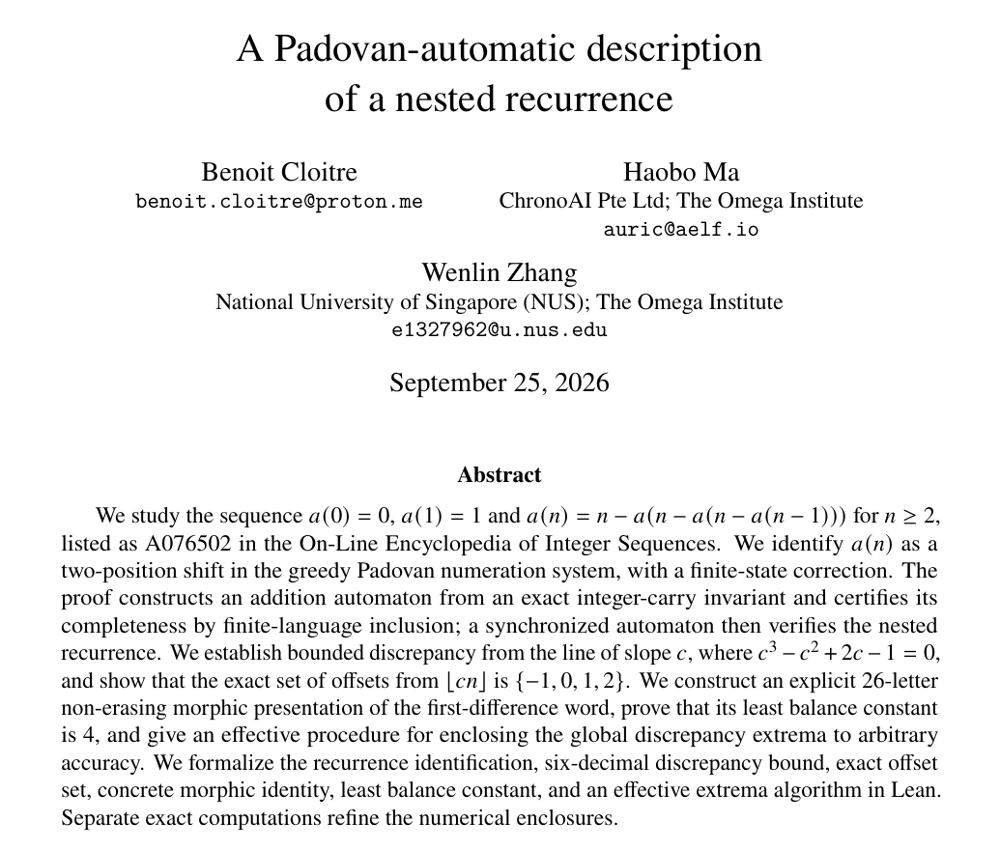
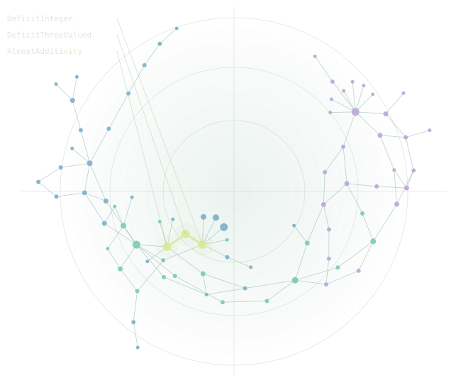
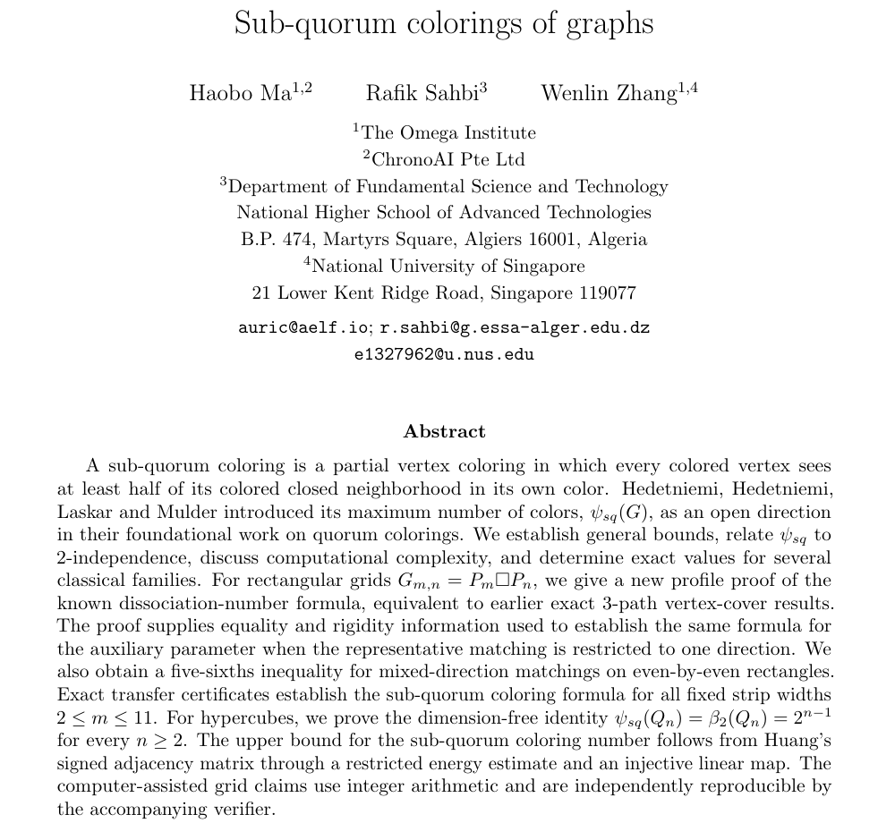
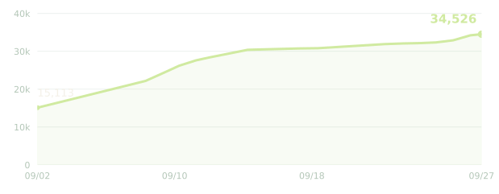

WITH BENOIT CLOITRE
A Padovan-automatic description of a nested recurrence
A counterexample grew into a joint theorem, independent verification and a reusable Lean archive.
arXiv:2609.33421 ↗Start with human intuition. Explore with AI. Ground it in Lean. Let every checked result inspire the next question.
See how the loop works ↗We have more ideas about the world than we can make precise on our own.
AI helps us explore, find connections and read the relevant work. A convincing chain of thought still needs a proof.
Make one relation precise, then build on it.
A question, a pattern, a possible connection.
Agents find sources. We study the definitions and sharpen the question.
State the assumptions. Check the proof. Preserve its dependencies.
Work on someone else’s conjecture. Their feedback opens the next question.

Our dependency graph is what accumulates when each result becomes something the next person can use.
Explore the shared knowledge ↗
A counterexample grew into a joint theorem, independent verification and a reusable Lean archive.
arXiv:2609.33421 ↗
From a formal hypercube proof to grid certificates, structural bounds and a shared paper.
arXiv:2609.25128v3 ↗The hypercube proof now appears in a three-author arXiv paper. Our grid work adds exact certificates and structural bounds.
The general grid conjecture.
Nikandish contributes proofs, geometry and code. We construct and check the coloring, then test the proposed structural explanations.
A structural coloring rule; dimension seven.
Their recurrence proposals led to an explicit solution for Campbell’s example and Fibonacci structure for Cloitre’s.
Full convergence of Cloitre’s ratio.

Observation scales · information escape
Relations of relations · recursion
Spacetime · holographic geometry
Bring this growing research system to OMM.
Different states give identical readings under every selected concept. Here, the catalog records degree sequence alone; it misses the difference between these graphs.
A real difference left uncaptured by our concepts.
x ≠ y, ∀ i ∈ S, cᵢ(x) = cᵢ(y)
Formal escape definition ↗(2,2,2,2,2,2)(2,2,2,2,2,2)Two different graphs; identical concept readings. Both ordered pairs escape.
Still-indistinguishable different pairs / all different pairs (ordered).
Any function of the same degree sequence still gives the same answer on both graphs.
Triangle count separates these two graphs: 0 versus 2. It reads a relation the degree sequence lost.
Remove triangle count: the two graphs become indistinguishable again. This isolates what that concept contributes beyond the rest.
δᵢ = ε(S ∖ {i}) − ε(S)
Contribution gain = escape without it − escape with it. Here: 1 − 0 = 1.Search literature, our library, pinned mathlib and third-party Lean libraries. Check assumptions; directly cite and apply exact matches.
Build on what is known.Count different states the catalog still cannot distinguish. Remove a contribution to test whether its distinction is supplied by the rest.
Identify its unique contribution.Expand aliases and local helpers. Reject mere instantiation, projection or repackaging as new mathematical content.
Require a substantive step.State the claim and assumptions in Lean. Check the proof term and its axiom dependencies in the kernel.
Establish that it follows.Checked contributions return to the library—with their sources and dependencies—for the next researcher or model.
Read the harness rules ↗Give the research a direction.
Expose a missing distinction.
Develop the next proof step.
Make the reasoning checkable.
Reproduce and strengthen the result.
Public problems certified.
Every answer backed by a Lean proof or countermodel.
Zero LLM calls in the EQT2 solver.
Joint mathematics, public proofs and independent verification.
Bring an open model into this research workflow.
Researchers choose meaningful directions and review the mathematics. SAIR brings its open-model effort and research community.
Active research projects and an open community, backed by reference retrieval, formal verification, information escape and rejection of bind-only.
Connect OMM to our harness and develop a shared research track with mathematicians and open contributors.
Let OMM help more people turn intuition into checked, reusable knowledge. Every contribution gives the next person a place to begin.